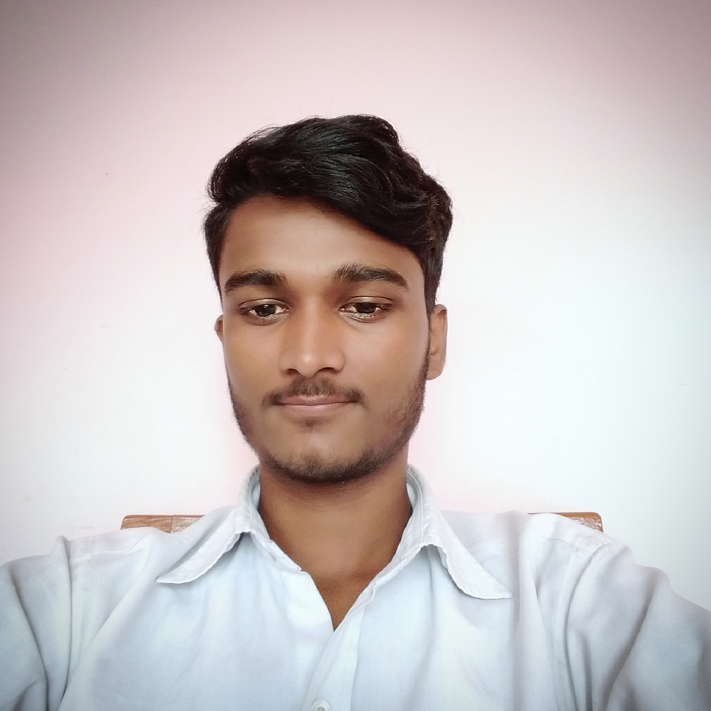

Contact: rajukumarsdr95@gmail.com
Linkedin: linkedin.com/in/raju-kumar
GitHub: github.com/timdevir07
Instagram: Instagram|  | Motivated Computer Science Engineering student with a passion for learning and exploring new technologies. Currently pursuing a B.Tech in Computer Science at J.C Bose YMCA University, seeking opportunities to apply academic knowledge in a real-world setting and contribute to innovative projects. |
Ans: Computer science is the study of computers, computing technologies, and algorithms.
Ans:Common languages include Java, Python, C++, and others, depending on your focus.
Ans: Practice coding problems on platforms like LeetCode and HackerRank, and study data structures and algorithms.
Ans: Software development, data science, artificial intelligence, cybersecurity, and more.
Ans: Online platforms like Codecademy, W3Schools, and Mozilla Developer Network (MDN) are great places to start.